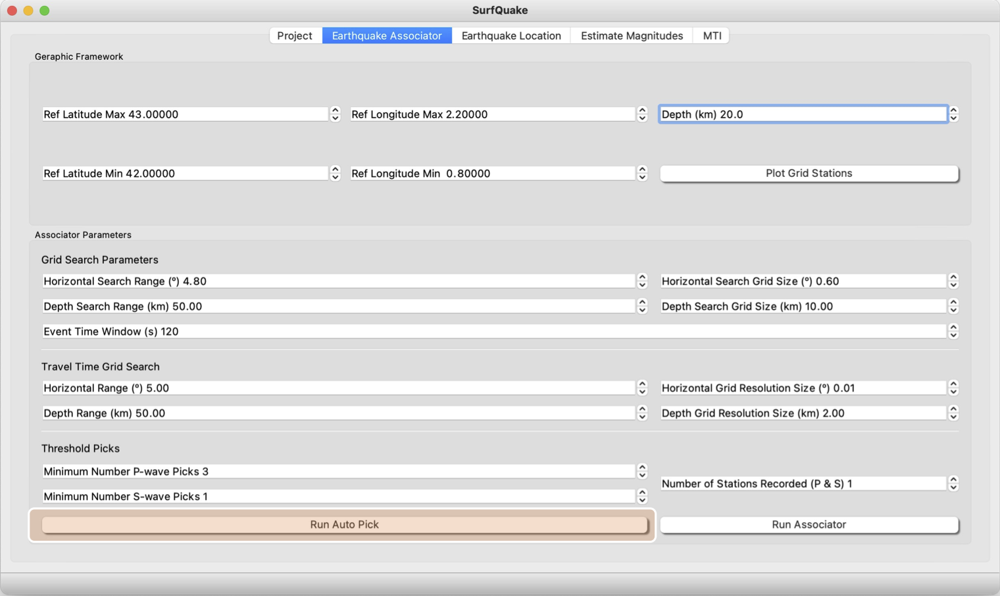

Phase Picker
The Picking algorythm of surfQuake uses the Deep Neural Network of Phasenet (Zhu and Beroza, 2019) to estimate the arrival times of P- and S-wave. The arrival times are saved as a csv file and in daily folders to be ready to be used by the associator. Example of csv header:
date,fname,year,month,day,net,station,flag,tt,date_time,weight,amplitude,phase
20220131,CA.ARBS.P,2022,1,31,CA,ARBS,1,39383.88,2022-01-31T10:56:23.880000,0.5383206605911255,8557892.700195312,P
20220131,CA.ARBS.S,2022,1,31,CA,ARBS,1,85480.59,2022-01-31T23:44:40.590000,0.30124416947364807,8481788.269042969,S
Phase Picker GUI
We start with the GUI. This is a screenshot of the Project GUI.

Be sure you have just created a Project or you have loaded one. Then click on Run Auto Pick. This action will start the phase picker and will save the output in Output Directory ready to be used in the associator toolbox and original_picks as csv file for direct reading.
Phase picker from CLI
Usage
>> surfquake pick -f [path to your project file] -d [path to your pick saving directory] -p [P-wave threshoold] -s [S-wave threshold] --verbose
Interactive help
Run Phase Picker from CLI
>> surfquake pick -f /test_surfquake_core/testing_data/projectssurfquake_project_new.pkl -d /test_surfquake_core/testing_data/picks -p 0.3 -s 0.3 --verbose
Phase Picker from Library
Classes
class PhasenetISP:
def __init__(files, batch_size=3, highpass_filter=0.5, min_p_prob=0.3, min_s_prob=0.3, min_peak_distance=50, amplitude=False):
"""
Main class to initialize the picker
:param files: Dictionary with kewords addressing to seismograms file path and their corresponding metadata (i.e. sampling rate).
:type SurfProject: required (see Project section)
:param batch_size: Determines the number of samples in each batch (larger batch size uses more memory but can provide more accurate updates)
:type float:
:param highpass_filter: Lower corner frequency of highpass filter to be applied to the raw seismogram. Set to 0 to do not apply any pre-filter
:type float:
:param min_p_prob: Probability threshold for P pick
:type float:
:param min_s_prob: Probability threshold for S pick
:type float:
:param min_peak_distance: Minimum peak distance
:type float:
:param amplitude: if return amplitude value
:type float:
:returns:
:rtype: :class:`surfquakecore.phasenet.phasenet_handler.PhasenetISP`
"""
Methods
@staticmethod
def split_picks(picks):
"""
:param picks: A DataFrame with all pick information
:type picks: Pandas DataFrame
"""
@staticmethod
def convert2real(picks, pick_dir: str):
"""
:param picks: picks is output from method split_picks in mseedutils
:param pick_dir: directory outpur where phases are storaged
:return:
"""
@staticmethod
def save_original_picks(original_picks, original_p_dir):
"""
:param original_picks: picking output from phasenet (method split_picks in mseedutils)
:param original_p_dir: output to storage original_picks
:return:
"""